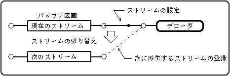
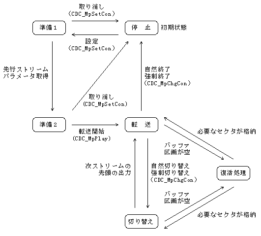
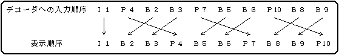
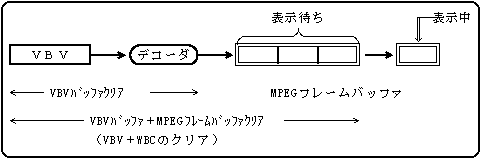
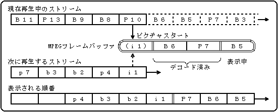
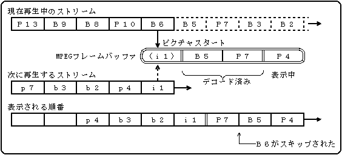
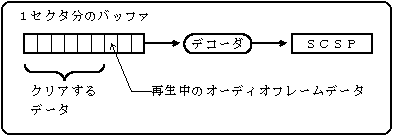

★PROGRAMMER'S GUIDE
★CD通信I/F(MPEGパート)
★PROGRAMMER'S GUIDE
★CD通信I/F(MPEGパート)
図5.1 次に再生するストリームの登録

| 状態 | 説 明 | 遷移条件 | 遷移先 | |
|---|---|---|---|---|
１ | 停止 | ストリームが登録されていない。 | 現ストリームの登録 | 準備１ |
２ | 準備１ | 指定されたバッファ区画に２セクタ格納されるのを待っている。 | デコードバッファサイズ取得 | 準備２ |
| 現ストリームを取り消す | 停止 | |||
３ | 準備２ | バッファ区画にデコードバッファサイズ分のデータが格納されるのを待っている。 | デコードバッファサイズ分格納 | 転送 |
| 強制転送指示 | 転送 | |||
| 現ストリームを取り消す | 停止 | |||
４ | 転送 （再生） | セクタデータをデコーダに転送している。（MPEGの再生状態） | バッファ区画が空になる | 復活処理 |
| 自然切り替え | 切り替え | |||
| 強制切り替え | 切り替え | |||
| 自然終了 | 停止 | |||
| 強制終了 | 停止 | |||
５ | 切り替え | 次ストリームの先頭が出力されるのを待っている。 | 先頭が出力された | 転送 |
| バッファ区画が空になる | 復活処理 | |||
６ | 復活処理 | 空になったバッファ区画にセクタが格納されるのを待っている。 | 必要なセクタが格納 | 転送／切り替え※ |
図5.2 転送ブロックの状態遷移図

図5.3 デコーダへの入力順序と表示順序

図5.4 MPEGビデオのバッファ構成

図5.5 Ｐピクチャスタート検出で切り替える例

図5.6 Ｂピクチャスタート検出で切り替える例

図5.7 MPEGオーディオのバッファ構成

★PROGRAMMER'S GUIDE
★CD通信I/F(MPEGパート)